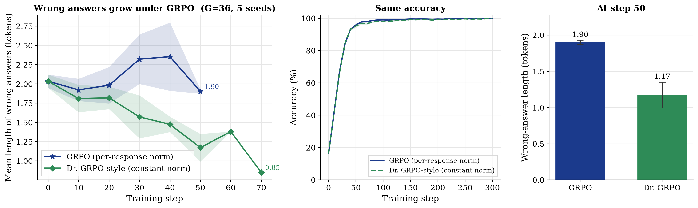

“All models are wrong, but some are useful.”
— George Box
A week ago I could not have told you what GRPO was. So I did what I usually do: I built the smallest version I could and broke it.
This post is about one line in the GRPO loss, dividing each response’s loss by its own length. In a toy model, that line changed the shape of the model’s mistakes. Both versions reached about 97% accuracy. Only one let its wrong answers grow longer.
The bias
GRPO samples a group of \(G\) responses per prompt, scores each against its siblings, and averages the loss over each response’s own length:
$$\mathcal{L}_{\text{GRPO}} = -\frac{1}{G} \sum_{i=1}^{G} \frac{1}{|o_i|} \sum_{t=1}^{|o_i|} \hat{A}_i \, \log \pi_\theta(o_{i,t})$$Each token’s weight is \(\hat{A}_i / (G\,|o_i|)\). Every response gets the same total push, but a long one spreads it thin. For a wrong answer (\(\hat{A}_i < 0\)), that means longer is cheaper: a 2-token wrong answer is penalized at \(|\hat{A}_i|/2G\) per token, an 8-token one at \(|\hat{A}_i|/8G\). The loss quietly says: if you are going to be wrong, be wrong at length.
The Dr. GRPO paper fixes this by dividing by a fixed constant instead, and dropping the std term.
The toy
The policy is a lookup table: 10 positions, 3 actions (good token, bad token, stop), one softmax per position. No transformer, so the loss is the only thing left to blame. A response is correct if it has at least one token and no bad tokens.
That “at least one token” clause came from a bug. My first reward only checked for bad tokens, and the model learned to say nothing at all. Reward hacking, in a 30-parameter model.
I trained both losses with Adam for 300 steps, with groups of 36 across 5 seeds. Every 10 steps I froze the model and sampled 500 fresh responses to measure accuracy and wrong-answer length.
Results

Both start with wrong answers about 2.03 tokens long. By step 40, GRPO’s have drifted to about 2.35, while the Dr. GRPO-style ones have shrunk to about 1.47. Accuracy is nearly identical throughout: about 93% at step 40, 97% by step 60.
If I had only looked at accuracy, I would have called the two losses the same. The curves stop around step 50 to 70 because by then fewer than 20 of 500 samples are wrong, and I would rather hide those points than plot noise.
Limits
This is a toy: a lookup table, responses of at most 10 tokens, 5 seeds, and a window of about 50 steps where the gap is measurable. My second variant also changes two things at once (length and std), so it does not isolate either. Next I want to ablate each alone and try the same comparison on a small open model with TRL.
One division does not show up in accuracy. You only find it by asking what the mistakes look like, not just how many there are. I would rather understand one equation deeply than recite fifty.
Code: github.com/sutharsikakumar/grpo-length-bias
Sources
- Liu et al. Understanding R1-Zero-Like Training: A Critical Perspective (2025). The Dr. GRPO paper.
- Shao et al. DeepSeekMath (2024). Introduced GRPO.